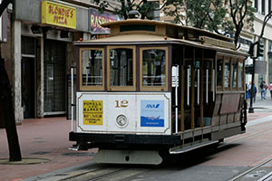

Transportation of San Francisco
Cable Cars
The most famous mode of transportation in San Francisco is of course the Cable Cars. There are three main routes that the Cable Cars travel on. There is the Powell-Mason and Powell-Hyde lines. The third line is the California Street line which runs East-West from the Financial District to Van Ness Avenue.
The cable cars are a very popular destination for tourist in San Francisco. The lines in the Summer months can get to be hours long. If you are wanting to ride the cable cars the best time is first thing in the morning as the lines are very short at this time and you can get just about any seat you want. If you want to ride the cable cars in the day and do not want to wait in line you can go up the line four or five stops and get on there. While you are not guaranteed a seat or even a place to stand as the car may be full, usually you can get on without too much trouble.
There is a video of the Cable Car from Market to California street in the Media section of this web site.